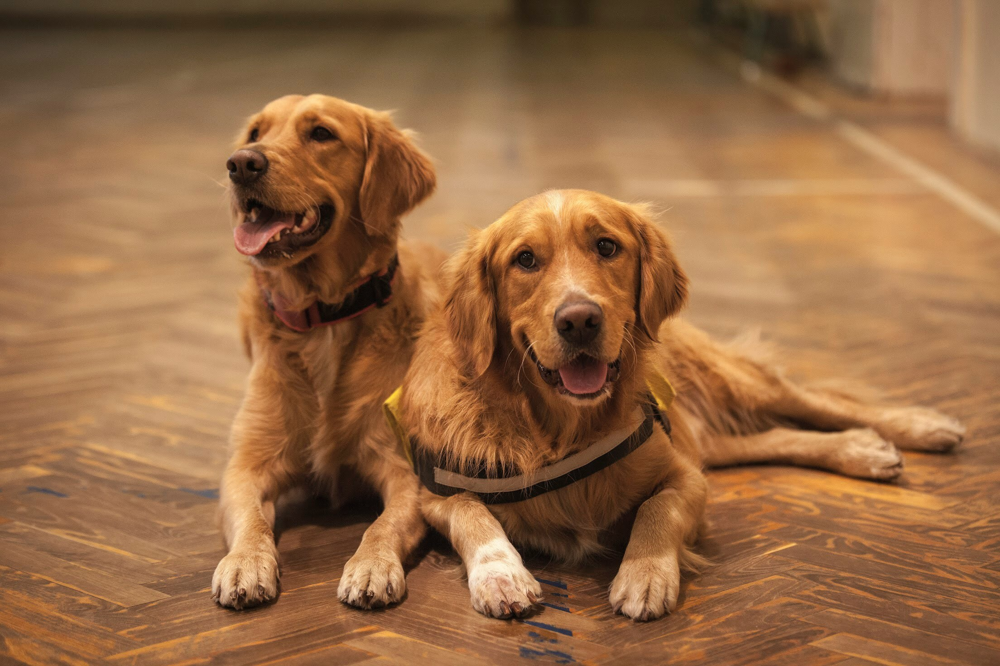

Create a profile
Start by creating a profile for your dog. Tell us about your dog's breed, age, personality, likes, and dislikes. Don't forget to upload some adorable photos to show off your pup's best side!
Whether your dog is looking for a playful partner, a running buddy, or just a new friend to chase squirrels with, you’re in the right place. Our platform connects dogs and their owners for friendships, fun, and furry adventures.
How it works?
Start by creating a profile for your dog. Tell us about your dog's breed, age, personality, likes, and dislikes. Don't forget to upload some adorable photos to show off your pup's best side!
Use our advanced search filters to find potential matches based on breed, size, location, and activity level. Our algorithm will also suggest compatible friends for your dog based on their profile.
Once you've found a suitable match, send a message to connect with the other dog owner. Arrange a playdate at a local park, attend a dog-friendly event together, or simply chat online to see if your dogs are a good fit.
If your dog has found a great match, we'd love to hear about it! Share your success stories and photos to inspire others and spread the joy.
Of course, it's not just about doggy connections -- keeping your pup healthy is top priority too!
Check out our blogs and resources for awesome tips on health, nutrition, training, and more. Join our community and make sure your furry friend stays happy and healthy while making new pals.